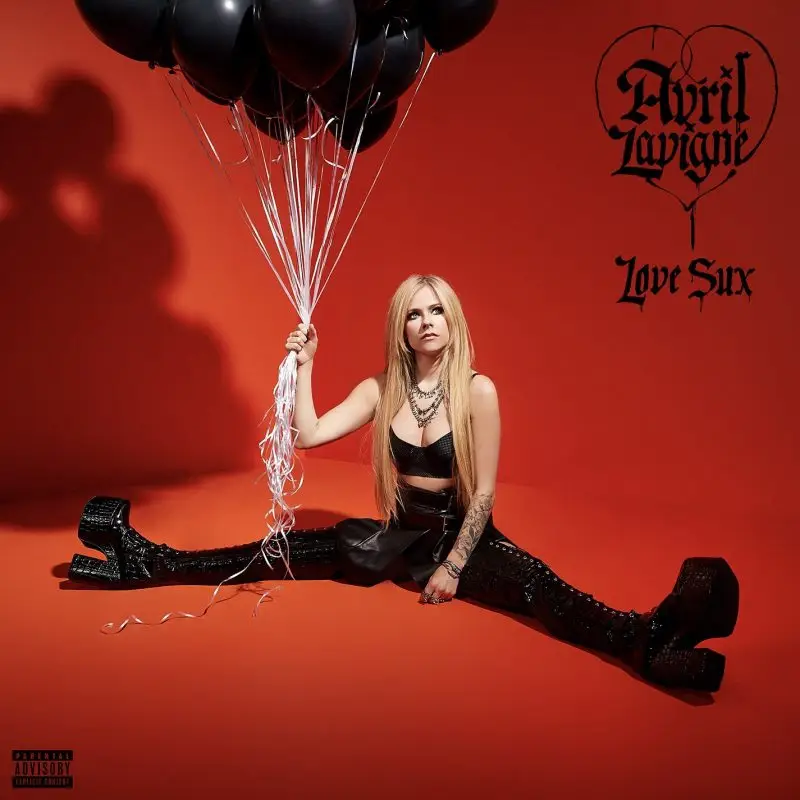

Avril Lavigne é uma cantora canadense de rock e country. É considera a Princesa do Pop Punk. Entre seus sucessos estão os singles “Girl Friend, Smile” e “What the Hell”. Avril nasceu na pequena cidade de Beleville, Canadá, no dia 27 de setembro de 1984. Filha de pai francês e mãe anglo-canadense foi criada na cidade de Napanee, no Canadá, onde cantava no coral da igreja que frequentava. Avril passou a fazer pequenas apresentações em exposições de gado. Os estilos country e gospel influenciaram muito a sua música. Aprendeu a tocar guitarra incorporando o Rock em seu estilo musical. O primeiro grande show foi aos 13 anos de idade, quando ganhou um concurso de uma rádio local e dividiu o palco com a cantora Shania Twain, uma cantora country, para um público de 20 mil pessoas. Com 14 anos começou a escrever suas próprias músicas. Com 15 anos foi morar em Nova York e em seguida foi para Los Angeles, onde assinou um contrato com a gravadora Arista Records, que resultou no álbum “Let Go” (2002), um sucesso de vendas, que lhe valeu 8 indicações ao Grammy.Avril Lavigne foi considerada uma das artistas mais famosas pela Billboard 200. Seu segundo álbum “Under my Skin” foi lançado em 2004. Em 2006 se casou com Derych Whibley, vocalista da banda Sun 41. Em 2007 lançou “The Best Damn Thing”. Em 2008 Avril Lavigne lançou sua grife a Abbey Dawm (seu apelido de infância). Em 2009 lançou seu perfume Black Star. Nesse mesmo ano anunciou seu divórcio.
1- Complicated O hino adolescente da era 2000. O clipe de Complicated é um dos clássicos cinematográficos enaltecidos até hoje. A música foi o primeiro single divulgado do primeiro álbum “Let Go”. Ele foi o responsável por colocar Avril no estrelato da música adolescente.
2- Sk8er Boi “He was a boy, she was a girl”… tem como ser mais óbvio que isso? É claro que estamos falando de Sk8er Boi. Esse foi o segundo single da carreira de Avril, também presente em “Let Go”, e obteve o mesmo sucesso que single anterior. No aniversário de 20 anos da música, Avril chegou manifestar o interesse de transformar o single em um filme.
3- I’m With You A primeira grande balada de Avri! I’m With You mostra um lado mais vulnerável e menos rock and roll da cantora. El é o terceiro single do álbum “Let Go” e chegou a ser trilha sonora da novela Mulheres Apaixonadas aqui no Brasil.
4- My Happy Ending Chegando ao segundo disco da cantora, a música “My Happy Ending” faz parte do disco “Under My Skin” (2004), onde mostra uma Avril tratando assuntos mais maduros do que os paixões adolescentes” em Let Go. Esse single junto com “Don’t Tell Me” e “Nobody’s Home”, marcam o início da mudança musical e comportamental de Avril.
5- Girlfriend Mudando completamente de cenário, “Girlfriend” representa a literal mudança da Avril que tínhamos no passado, para a que temos hoje! Presente no álbum “The Best Damn Thing” (2007), foi lançada como segundo single e a que teve melhor desempenho comercial até hoje. Apesar de ter obtido números bons em desempenho comercial, alguns fãs não gostaram da “nova Avril Lavigne”.
6- Wish You Were Here Passando para 2011, Avril lançava o seu quarto álbum de estúdio e “Wish You Were Here” foi o terceiro single do disco. No álbum, a cantora apostou na sonoridade mais “despojada” e acústica, no qual a balada Wish You Were Here está inserida. O álbum não foi tão bem recebido pela crítica, contudo a canção teve uma performance relativamente boa comparada ao álbum.
7- Here’s To Never Growing Up Aparentemente, depois do ritmo desacelerado do álbum anterior, Avril voltou com tudo no seu quinto disco “Avril Lavigne” (2013), onde está inserida a canção “Here’s To Never Growing Up”. A faixa foi anunciada como primeiro single do álbum e traz algumas alusões a música “Complicated”, onde em seu clipe, Avril aparece vestindo as roupas do seu primeiro hit. A música teve uma importante contribuição para a volta de Avril para as paradas de sucesso.
8- Bite Me Trazendo para os dias atuais, “Bite Me” foi o primeiro single divulgado do sétimo álbum de estúdio de Avril, “Love Sux”. A música foi notada pelos críticos como um retorno às raízes pop-punk de Lavigne. Chegou a ser comparada com os álbuns Let Go e The Best Damn Thing pela sua sonoridade mais alegre.
| Let go | Under My Skin | The Best Damn Thing | Head Above Water | Avril Lavigne | Love Sux |
|---|---|---|---|---|---|
|  | |||||
|
|
|||||
Avril atuou no cinema em diversos filmes, entre eles, “The Flock” (2007), “Fast Food Nation” (2007), “Going the Distance” (2010) e escreveu a trilha sonora para o filme “Alice no País das Maravilhas” (2010), de Tim Burton.
Em maio de 2010, Avril criou a Fundação Avril Lavingne com o objetivo de ajudar crianças e jovens com necessidades especiais
Em 2014, após uma viagem a Las Vegas, a cantora canadense, que se apresenta nesta sexta-feira (9) no Palco Sunset do Rock in Rio, foi diagnosticada com doença de Lyme, uma síndrome transmitida pela bactéria Borrelia burgdoferi, encontrada em carrapatos-estrela (Amblyomma) e carrapatos da espécie Ixodes."Eu fiquei na cama durante cinco meses”, disse Avril à revista. “Não tinha ideia de que um carrapato poderia fazer isso. Eu não conseguia respirar, não conseguia falar e nem me mexer. Eu achei que estava morrendo. Em alguns momentos, não consegui tomar banho por uma semana inteira porque mal me aguentava em pé.”Eu fiquei na cama durante cinco meses”, disse Avril à revista. “Não tinha ideia de que um carrapato poderia fazer isso. Eu não conseguia respirar, não conseguia falar e nem me mexer. Eu achei que estava morrendo. Em alguns momentos, não consegui tomar banho por uma semana inteira porque mal me aguentava em pé.”
1.A gravadora de Avril sempre quis que ela seguisse os passos do Pop Britney Spears, algo que Lavigne sempre bateu o pé e foi contra a corrente, o que lhe diferenciou e a destacou do movimento musical predominante da época.
2. O seu grande sucesso no início dos anos 2000 fez com que ela se tornasse um ícone da moda! Enquanto alguns gostavam de se vestir como Paris Hilton, as garotas mais novas amavam o estilo rebelde e skatista de Avril, o que fez com que muuuuitas andassem por aí com mechas rosas no cabelo e gravatas por cima de regatas.
3. Ao longo de sua carreira, Avril já compôs mais de 100 músicas - sendo que muitas delas foram interpretadas por outros grandes artistas, como Kelly Clarkson, Leona Lewis e Rihanna.
4.Como todo sucesso de Hollywood, uma grande teoria da conspiração roda Avril. Já que a cantora aparenta não envelhecer nunca, muitos especulam que ela tenha sido trocada por uma garota idêntica a ela.
5. Avril tem os seus favoritos! Suas séries preferidas são Downtown Abbey e Orange Is The New Black, seu clipe preferido é Complicated, sua comida favorita é pizza e sua banda favorita é Nirvana.